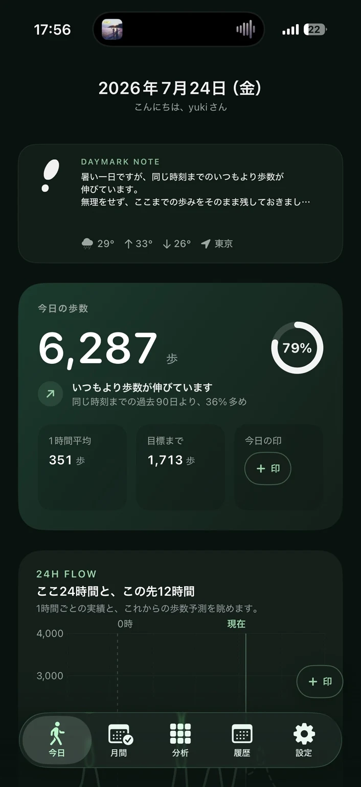
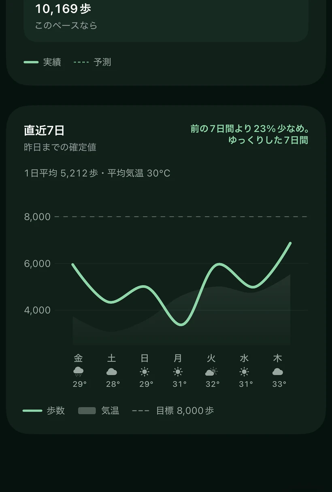

今日を知る
DAYMARK NOTE、今日の歩数、目標までの進み具合を一つの画面で確認できます。
iPhoneアプリ
歩数の多さだけで一日を評価せず、天気や生活のリズムとともに振り返るアプリです。今日の歩数や流れを見渡し、その日に感じたことを小さな印として残せます。

Concept
歩けた日も、思うように歩けなかった日も、その日にはそれぞれの生活があります。Daymark Stepsは、数字の大小だけで判断せず、時間帯の変化や天気、過去の自分との比較を通じて、一日の過ごし方を振り返るためにつくっています。
Screens
今日の歩数から一日の流れ、直近の傾向まで、実際のアプリ画面で確認できます。
DAYMARK NOTE、今日の歩数、目標までの進み具合を一つの画面で確認できます。

ここ24時間の実績と、この先12時間の歩数予測を時間帯ごとに眺められます。

直近7日間の歩数と天気を重ねて、生活のペースや変化を振り返れます。
Features
歩数を記録するだけでなく、今日の過ごし方をいくつもの角度から振り返れます。
今日の歩数と目標までの進み具合を、ひと目で確認できます。
同じ時刻の過去データと比較し、今日がどのような一日かを見渡します。
曜日、気温、雨、時間帯などと歩数の関係を振り返れます。
数字には表れない出来事や気分を、その日の印として残せます。
対応環境
対応OSの詳細はApp Storeをご確認ください。歩数の取得にはヘルスケアへのアクセス許可が必要です。
プライバシー
取得する情報と保存方法は、プライバシーポリシーでご案内しています。
サポート
ご質問や不具合のご連絡は、サポートページへお送りください。